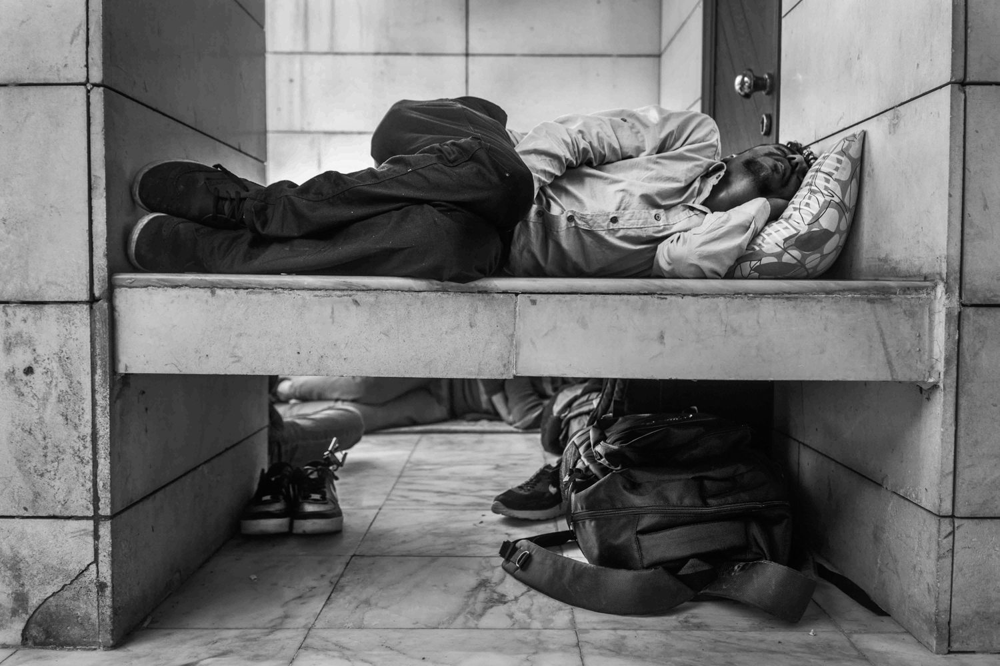

Istanbul
By Loubna Mrie and Miguel Winograd
In mid-October, a group of around 500 refugees—organized through a Facebook group called “Crossing No More,”—held a sit-in in Esenlet, Istanbul's bus terminal. They demanded that Turkish authorities let them board buses towards Edirne, so they could cross to Greece by land and avoid the known and preventable dangers of the Aegean crossing.